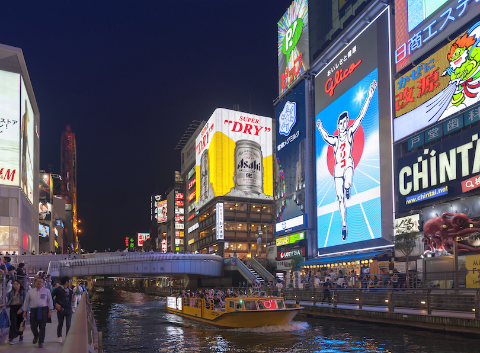
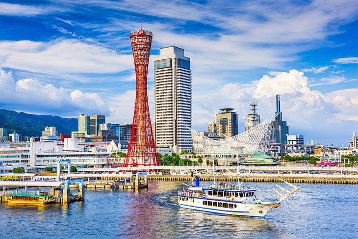

Sobre Nós
Somos uma comunidade que busca popularizar a cultura japonesa por meio de guias de turismo, indicando os hotspots mais famosos, e também os mais secretos. Compatilhando as nossas experiências e viagems na Terra do Sol Nascente.

Locais
TóquioTóquio é a capital do Japão e uma metrópole vibrante, conhecida por sua fusão de tradição e modernidade. Oferece uma infinidade de atrações, desde templos antigos até arranha-céus futuristas, compras de alta qualidade e uma cena gastronômica diversificada. |

QuiotoQuioto é uma cidade repleta de história e cultura. É famosa por seus templos e santuários, como o Templo de Kinkaku-ji e o Fushimi Inari Taisha, com seus milhares de portões vermelhos. É um mergulho no Japão tradicional. |

OsakaOsaka é o coração do comércio e da gastronomia do Japão. É conhecida por sua comida de rua deliciosa, como takoyaki e okonomiyaki. Também abriga o Castelo de Osaka e um agitado distrito de entretenimento. |

HiroshimaSituada na costa do Mar Interior, Hiroshima é uma cidade japonesa que combina história e beleza natural. Ela oferece um cenário pitoresco com seus jardins, rios e montanhas próximas. Hiroshima também é famosa por sua cultura local, incluindo a dança do obon e a culinária okonomiyaki. |
NagasakiLocalizada em uma deslumbrante enseada, Nagasaki é uma cidade que exala charme histórico e beleza costeira. É conhecida por sua influência estrangeira, que se reflete na arquitetura eclética e nas opções culinárias únicas. Nagasaki também é famosa por suas vistas panorâmicas, incluindo o Monte Inasa e a bela ilha de Gunkanjima. |
HokkaidoA ilha de Hokkaido oferece paisagens espetaculares, incluindo montanhas, lagos e fontes termais. É conhecida por suas estações de esqui no inverno, bem como pela deliciosa culinária, como o famoso ramen de Sapporo. |
FukuokaFukuoka, localizada na ilha de Kyushu, é uma cidade vibrante com uma atmosfera descontraída. É conhecida por sua culinária, incluindo ramen tonkotsu, e pela beleza natural das montanhas e praias próximas. |

KobeKobe é uma cidade portuária sofisticada, famosa por sua carne de boi de alta qualidade e pela Torre de Kobe. Oferece uma experiência urbana única, com restaurantes elegantes e uma atmosfera cosmopolita. |

OkinawaOkinawa é um paraíso tropical no sul do Japão, conhecido por suas praias de areia branca, águas cristalinas e cultura única de Ryukyu. É um ótimo destino para relaxar, praticar esportes aquáticos e explorar a herança local.. |
Fique por dentro!
Cadastre-se!
Entre em Contato
Possui alguma dúvida? Entre em contato por meio do formulário...